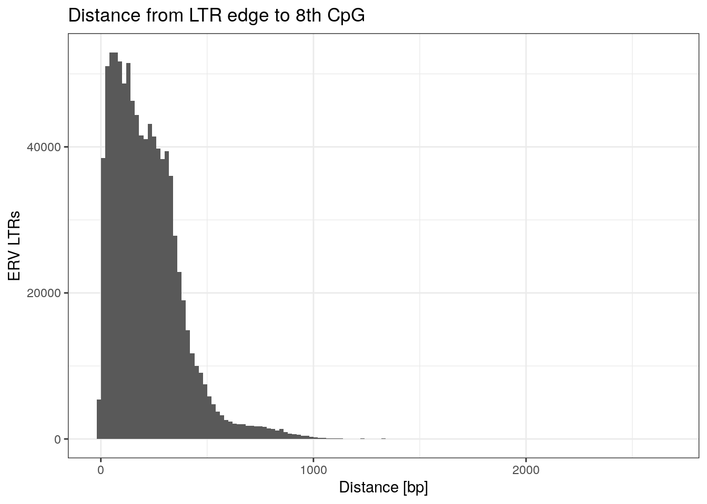
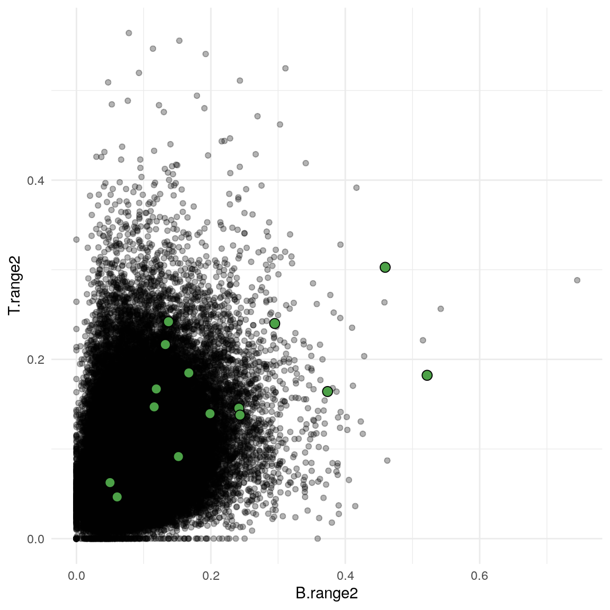
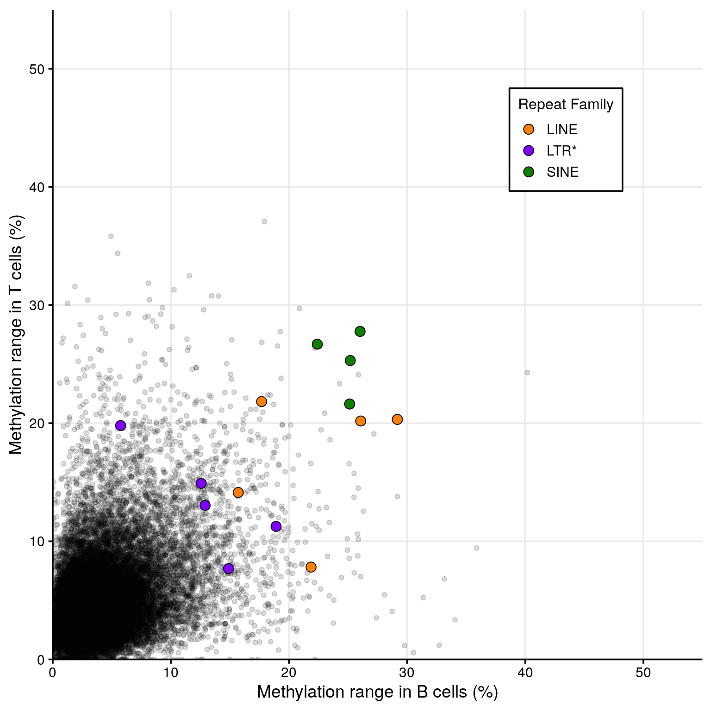

Last updated: 2020-10-21
Checks: 7 0
Knit directory: vm-retrotransposons/
This reproducible R Markdown analysis was created with workflowr (version 1.6.2). The Checks tab describes the reproducibility checks that were applied when the results were created. The Past versions tab lists the development history.
Great! Since the R Markdown file has been committed to the Git repository, you know the exact version of the code that produced these results.
Great job! The global environment was empty. Objects defined in the global environment can affect the analysis in your R Markdown file in unknown ways. For reproduciblity it’s best to always run the code in an empty environment.
The command set.seed(20200511) was run prior to running the code in the R Markdown file. Setting a seed ensures that any results that rely on randomness, e.g. subsampling or permutations, are reproducible.
Great job! Recording the operating system, R version, and package versions is critical for reproducibility.
Nice! There were no cached chunks for this analysis, so you can be confident that you successfully produced the results during this run.
Great job! Using relative paths to the files within your workflowr project makes it easier to run your code on other machines.
Great! You are using Git for version control. Tracking code development and connecting the code version to the results is critical for reproducibility.
The results in this page were generated with repository version 6fa0881. See the Past versions tab to see a history of the changes made to the R Markdown and HTML files.
Note that you need to be careful to ensure that all relevant files for the analysis have been committed to Git prior to generating the results (you can use wflow_publish or wflow_git_commit). workflowr only checks the R Markdown file, but you know if there are other scripts or data files that it depends on. Below is the status of the Git repository when the results were generated:
Ignored files:
Ignored: analysis/02.Screen_for_VM_IAP_cache/
Ignored: analysis/figure/
Untracked files:
Untracked: 01.IAP_Annotations.Rmd
Untracked: 20200803.RData
Untracked: FourC.plots.indiv.with_legend.pdf
Untracked: Rplot.svg
Untracked: SciAdv_ME_regions.tsv.txt
Untracked: __pycache__/
Untracked: code/4C_seq.R
Untracked: code/CTCFChIPatVM-IAPs_narrowpeak.sh
Untracked: code/CTCFChIPatVM-IAPs_pvalueRelax_narrowpeak.sh
Untracked: code/CTCF_Analysis.Rmd
Untracked: code/CTCF_Analysis.nb.html
Untracked: code/CTCF_motif_in_IAP.Rmd
Untracked: code/CTCF_motif_in_IAP.nb.html
Untracked: code/CpGdensity_VM-IAPs.R
Untracked: code/LTR_components.R
Untracked: code/TransposableElements.py
Untracked: code/__pycache__/
Untracked: code/align_and_save.sh
Untracked: code/combine_8Indiv_CTCFChIP.r
Untracked: code/combine_8Indiv_CTCFChIP_pvalueRelax.r
Untracked: code/data_functions.R
Untracked: code/demultiplex4C_5indiv.sh
Untracked: code/element_metatype_boundaries.py
Untracked: code/fix_RepeatMasker_breaks.py
Untracked: code/genomics_functions.R
Untracked: code/heatmaps_NJK.R
Untracked: code/jellyfish_wrapper.py
Untracked: code/kmer_alignment.py
Untracked: code/map.commands_cp.sh
Untracked: code/mergeBam
Untracked: code/normalize_log2.sh
Untracked: code/normalize_log2_IAP_consensus.sh
Untracked: code/normalize_log2_mergedBams.sh
Untracked: code/plot_chip_in_iap.R
Untracked: code/run_fimo_top10percent.sh
Untracked: code/run_meme_top_10_percent.sh
Untracked: data/4C-seq/
Untracked: data/R_objects/
Untracked: data/chromHMM/
Untracked: data/ctcf/
Untracked: data/jellyfish/
Untracked: data/kmer/
Untracked: data/misc/Schema_for_rmskOutCurrent.html
Untracked: data/misc/mm10.chrom.sizes
Untracked: data/repeat_annotations/
Untracked: data/validation/
Untracked: elems_meta.tsv
Untracked: output/CTCF_ChIP.non_VM.pdf
Untracked: output/CTCF_and_motif.NonVM.Full.pdf
Untracked: output/CTCF_and_motif.NonVM.pdf
Untracked: output/CTCF_and_motif.VM.pdf
Untracked: output/CTCF_and_motif.all.a4.pdf
Untracked: output/CTCF_and_motif.all.a4.ps
Untracked: output/CTCF_and_motif.all.a4.svg
Untracked: output/CTCF_heatmap_legend.pdf
Untracked: output/CpG_density_plt.pdf
Untracked: output/FourC.combo_plots.pdf
Untracked: output/FourC.indiv_plots.pdf
Untracked: output/Methylation_outside_cVMIAPs.pdf
Untracked: output/Non_ERV.ranges2.background.png
Untracked: output/Non_ERV.ranges2.foreground.pdf
Untracked: output/Non_ERV.ranges2.foreground.svg
Untracked: test.pdf
Untracked: unsorted.Rmd
Untracked: vm-retrotransposons.Rproj
Untracked: vm_erv.R
Unstaged changes:
Deleted: Paper_VMIAP_2020.Rproj
Modified: README.md
Deleted: analysis/fix_RepeatMasker_breaks.py
Deleted: data/misc/example_broken_IAP.PNG
Note that any generated files, e.g. HTML, png, CSS, etc., are not included in this status report because it is ok for generated content to have uncommitted changes.
These are the previous versions of the repository in which changes were made to the R Markdown (analysis/08.Screen_for_non_IAP_VM.Rmd) and HTML (docs/08.Screen_for_non_IAP_VM.html) files. If you’ve configured a remote Git repository (see ?wflow_git_remote), click on the hyperlinks in the table below to view the files as they were in that past version.
| File | Version | Author | Date | Message |
|---|---|---|---|---|
| Rmd | 6fa0881 | Noah Kessler | 2020-10-21 | wflow_publish(“analysis/08.Screen_for_non_IAP_VM.Rmd”) |
get.files.and.names <- function(dir, pattern) {
files <- file.path(dir, list.files(dir, pattern))
names <- as.character(sapply(files, function(n) paste(strsplit(basename(n),"\\.")[[1]][1:2], collapse="_")))
list(names = names, files = files)
}
get.files.and.names.non_ERV <- function(dir, pattern) {
files <- file.path(dir, list.files(dir, pattern))
nms <- as.character(sapply(files, function(n) paste(strsplit(basename(n),"\\.")[[1]][1:2], collapse="_")))
lst <- as.list(files)
names(lst) <- nms
lst
}
CpG.methy.non_ERV <- function(CG.df, methy.data.lst, shift=0, just.counts=FALSE) {
for (sample.name in names(methy.data.lst)) {
cat(sample.name,"\n")
sample.data <- methy.data.lst[[sample.name]]
if (just.counts) {
colnames(sample.data) <- c("chrom", "CG.pos",
paste0(sample.name, ".umC"), paste0(sample.name, ".mC"))
} else {
colnames(sample.data) <- c("chrom", "CG.pos",
paste0(sample.name, ".umC"), paste0(sample.name, ".mC"),
paste0(sample.name, ".depth"), paste0(sample.name, ".methy"))
}
sample.data$chrom <- factor(sample.data$chrom, levels=levels(CG.df$chrom))
sample.data$CG.pos <- sample.data$CG.pos + shift #shift to 1-indexed pos
CG.df <- left_join(CG.df, sample.data, by=c("chrom", "CG.pos"))
}
CG.df
}
CpGs.in.region <- function(CpG.gr, region.gr, N.CpG, from.right=FALSE) {
ovlps <- as.data.frame(findOverlaps(CpG.gr, region.gr))
ovlps$CG.pos <- start(CpG.gr[ovlps$queryHits])
if (from.right) {
ovlps <- ovlps %>% arrange(subjectHits, desc(CG.pos))
}
selected.CGs <- ovlps %>%
group_by(subjectHits) %>%
mutate(CG.index=1:n()) %>%
top_n(-N.CpG, CG.index) %>%
dplyr::select(-queryHits) %>%
as.data.frame()
colnames(selected.CGs) <- c("index", "CG.pos", "CG.index")
selected.CGs$side <- if (from.right) "right" else "left"
selected.CGs
}
CpGs.in.region.non_ERV <- function(CpG.gr, region.gr, N.CpG, max.dist.from.edge, three.prime=FALSE) {
region.gr <- resize(region.gr, max.dist.from.edge, fix=ifelse(three.prime, "end", "start"))
ovlps <- as.data.frame(findOverlaps(CpG.gr, region.gr))
if (nrow(ovlps) == 0) return(NULL)
ovlps$CG.pos <- start(CpG.gr[ovlps$queryHits]) * ifelse(strand(region.gr[ovlps$subjectHits])=="-", -1, 1)
if (three.prime) {
ovlps$CG.pos <- -1 * ovlps$CG.pos
}
ovlps <- ovlps %>% arrange(CG.pos)
selected.CGs <- ovlps %>%
group_by(subjectHits) %>%
mutate(CG.index=1:n()) %>%
top_n(N.CpG, -CG.pos) %>%
dplyr::select(-queryHits) %>%
as.data.frame()
colnames(selected.CGs) <- c("index", "CG.pos", "CG.index")
selected.CGs$CG.pos <- abs(selected.CGs$CG.pos)
selected.CGs$edge <- if (three.prime) "3prime" else "5prime"
#selected.CGs$side <- if (from.right) "right" else "left"
selected.CGs
}
LTR.CpG.methy <- function(LTR.CG.df, files, sample.names, shift=0, just.counts=FALSE) {
stopifnot(length(sample.names) == length(files))
for (f.idx in 1:length(files)) {
cat(sample.names[f.idx],"\n")
sample.data <- read.table(files[f.idx], header=FALSE)
if (just.counts) {
colnames(sample.data) <- c("chrom", "CG.pos",
paste0(sample.names[f.idx], ".umC"), paste0(sample.names[f.idx], ".mC"))
} else {
colnames(sample.data) <- c("chrom", "CG.pos",
paste0(sample.names[f.idx], ".umC"), paste0(sample.names[f.idx], ".mC"),
paste0(sample.names[f.idx], ".depth"), paste0(sample.names[f.idx], ".methy"))
}
sample.data$chrom <- factor(sample.data$chrom, levels=levels(LTR.CG.df$chrom))
sample.data$CG.pos <- sample.data$CG.pos + shift #shift to 1-indexed pos
LTR.CG.df <- left_join(LTR.CG.df, sample.data, by=c("chrom", "CG.pos"))
}
LTR.CG.df
}
element.mean <- function(CG.methy, min.N.CG=0) {
CG.methy %>%
dplyr::select(element.ID, side, CG.index, ends_with(".umC"), ends_with(".mC")) %>%
gather("samp_state", "count", ends_with("mC")) %>%
separate(samp_state, c("sample", "m.state"), "\\.") %>%
spread(m.state, count) %>%
filter(!is.na(mC) & !is.na(umC)) %>%
group_by(element.ID, side, sample) %>%
filter(n() >= min.N.CG) %>%
summarize(total.count = sum(mC+umC), methy=sum(mC) / total.count)
}
element.mean.non_ERV <- function(CG.methy, min.N.CG=0) {
CG.methy %>%
dplyr::select(new.element.ID, edge, CG.index, ends_with(".umC"), ends_with(".mC")) %>%
gather("samp_state", "count", ends_with("mC")) %>%
separate(samp_state, c("sample", "m.state"), "\\.") %>%
spread(m.state, count) %>%
filter(!is.na(mC) & !is.na(umC)) %>%
group_by(new.element.ID, edge, sample) %>%
filter(n() >= min.N.CG) %>%
summarize(total.count = sum(mC+umC), methy=sum(mC) / total.count)
}
calculate.ranges <- function(means, min.count, min.samps, prefix=NULL) {
means %>%
filter(total.count >= min.count) %>%
group_by(element.ID, side) %>%
filter(n() >= min.samps) %>%
arrange(desc(methy)) %>%
summarize(range1=dplyr::first(methy, 1)-dplyr::last(methy),
range2=nth(methy, 2)-nth(methy,n()-1)) %>%
{ if (!is.null(prefix))
rename_at(., vars(-c("element.ID", "side")), ~ paste0(prefix, .))
else .
}
}
calculate.ranges.non_ERV <- function(means, min.count, min.samps, prefix=NULL) {
means %>%
filter(total.count >= min.count) %>%
group_by(new.element.ID, edge) %>%
filter(n() >= min.samps) %>%
arrange(desc(methy)) %>%
summarize(range1=dplyr::first(methy, 1)-dplyr::last(methy),
range2=nth(methy, 2)-nth(methy,n()-1)) %>%
{ if (!is.null(prefix))
rename_at(., vars(-c("new.element.ID", "edge")), ~ paste0(prefix, .))
else .
}
}
merge.within.dist <- function(gr, maxgap) {
if (maxgap %% 2 == 1) {
mgap1 <- floor(maxgap2/2)
mgap2 <- mgap2 + 1
} else {
mgap1 <- mgap2 <- maxgap
}
ovlps <- as.data.frame(findOverlaps(gr+mgap1, gr+mgap2))
new.IDs <- ovlps %>% group_by(queryHits) %>% summarize(new.element.ID=min(subjectHits)) %>% ungroup() %>% arrange(queryHits)
gr$new.element.ID <- new.IDs$new.element.ID
gr <- extent.gr(gr, "new.element.ID")
gr
}mm10.ERV <- bind_rows(
read.table(file.path(params$repeat_annot_dir, "rmskOutCurrent.Dfam_2_0.v4_0_7.ERV1.fixed_100kb_s_20_r_20.tsv")),
read.table(file.path(params$repeat_annot_dir, "rmskOutCurrent.Dfam_2_0.v4_0_7.ERVK.fixed_100kb_s_20_r_20.tsv")),
read.table(file.path(params$repeat_annot_dir, "rmskOutCurrent.Dfam_2_0.v4_0_7.ERVL.fixed_100kb_s_20_r_20.tsv")),
read.table(file.path(params$repeat_annot_dir, "rmskOutCurrent.Dfam_2_0.v4_0_7.ERVL-MaLR.fixed_100kb_s_20_r_20.tsv"))
)Warning in bind_rows_(x, .id): Unequal factor levels: coercing to characterWarning in bind_rows_(x, .id): binding character and factor vector, coercing
into character vector
Warning in bind_rows_(x, .id): binding character and factor vector, coercing
into character vectorWarning in bind_rows_(x, .id): Unequal factor levels: coercing to characterWarning in bind_rows_(x, .id): binding character and factor vector, coercing
into character vector
Warning in bind_rows_(x, .id): binding character and factor vector, coercing
into character vectorWarning in bind_rows_(x, .id): Unequal factor levels: coercing to characterWarning in bind_rows_(x, .id): binding character and factor vector, coercing
into character vector
Warning in bind_rows_(x, .id): binding character and factor vector, coercing
into character vector
Warning in bind_rows_(x, .id): binding character and factor vector, coercing
into character vector
Warning in bind_rows_(x, .id): binding character and factor vector, coercing
into character vector
Warning in bind_rows_(x, .id): binding character and factor vector, coercing
into character vector
Warning in bind_rows_(x, .id): binding character and factor vector, coercing
into character vector
Warning in bind_rows_(x, .id): binding character and factor vector, coercing
into character vector
Warning in bind_rows_(x, .id): binding character and factor vector, coercing
into character vectorcolnames(mm10.ERV) <- c("chrom", "start", "end", "strand", "repName", "repClass", "repFamily", "repStart", "repEnd", "element.ID")
# identify edges of elements
mm10.ERV <- mm10.ERV %>%
arrange(chrom, start) %>%
group_by(element.ID) %>%
mutate(
subelem.idx=row_number(),
subelem.count=n(),
first.subelement=subelem.idx==1,
last.subelement=subelem.idx==subelem.count
) %>%
ungroup() %>%
dplyr::select(-subelem.idx, -subelem.count)
#swap first/last labels of - strand elements
mm10.ERV[mm10.ERV$strand=='-', c("first.subelement", "last.subelement")] <- mm10.ERV[mm10.ERV$strand=='-', c("last.subelement", "first.subelement")]
mm10.ERV.gr <- df.as.gr(mm10.ERV)
mm10.ERV.extent.gr <- extent.gr(mm10.ERV.gr, "element.ID")
mm10.ERV.gr$is.LTR <- !grepl(".*[-int|_I]$", mm10.ERV.gr$repName)mm10.CpG.gr <- get.mm10.CpGs()
N.CPG <- 8
# look at 'left'-most CpGs from the 5' end of + strand LTRs
# and from the 3' end of - strand LTRs
mm10.ERV.LTR.look_left <- mm10.ERV.gr[with(mm10.ERV.gr,
is.LTR & ((first.subelement & strand == "+") | (last.subelement & strand == "-"))
)]
# look at 'right'-most CpGs from the 3' end of + strand LTRs
# and from the 5' end of - strand LTRs
mm10.ERV.LTR.look_right <- mm10.ERV.gr[with(mm10.ERV.gr,
is.LTR & ((first.subelement & strand == "-") | (last.subelement & strand == "+"))
)]
mm10.ERV.LTR.CpGs <- rbind(
index.r_join(mm10.ERV.LTR.look_left, CpGs.in.region(mm10.CpG.gr, mm10.ERV.LTR.look_left, N.CPG, FALSE)),
index.r_join(mm10.ERV.LTR.look_right, CpGs.in.region(mm10.CpG.gr, mm10.ERV.LTR.look_right, N.CPG, TRUE))
) %>%
arrange(element.ID, side, CG.index) %>%
dplyr::select(seqnames, start, end, strand, repName, element.ID, side, CG.pos, CG.index)
colnames(mm10.ERV.LTR.CpGs)[1] <- "chrom"dist.from.edge <- rbind(
cbind(mm10.ERV.LTR.CpGs %>%
filter(side=="left") %>%
group_by(element.ID) %>%
summarize(dist=max(CG.pos-start)),
side="left"),
cbind(mm10.ERV.LTR.CpGs %>%
filter(side=="right") %>%
group_by(element.ID) %>%
summarize(dist=max(end-CG.pos)),
side="right")
)
ggplot(dist.from.edge) +
geom_histogram(aes(x=dist), binwidth=20, center=10) +
theme_bw() +
ggtitle(sprintf("Distance from LTR edge to %s CpG", toOrdinal::toOrdinal(N.CPG))) +
xlab("Distance [bp]") + ylab("ERV LTRs")
MIN.N.CG <- 4
MIN.COUNT <- 20
MIN.SAMPS <- 5
methy.samples.B <- get.files.and.names(params$erv_methy_dir, "^B6_[FM]_B_.*\\.methy\\.combined_strand\\..*\\.tsv$")
methy.samples.T <- get.files.and.names(params$erv_methy_dir, "^B6_[FM]_T_.*\\.methy\\.combined_strand\\..*\\.tsv$")
LTR.methy.B <- LTR.CpG.methy(mm10.ERV.LTR.CpGs, methy.samples.B$files, methy.samples.B$names, 0, TRUE)B6_F_B_BS_10
B6_F_B_BS_12
B6_F_B_OX_11
B6_F_B_OX_9
B6_M_B_BS_1
B6_M_B_BS_4
B6_M_B_OX_2
B6_M_B_OX_3 LTR.methy.T <- LTR.CpG.methy(mm10.ERV.LTR.CpGs, methy.samples.T$files, methy.samples.T$names, 0, TRUE)B6_F_T_BS_13
B6_F_T_BS_15
B6_F_T_OX_14
B6_F_T_OX_16
B6_M_T_BS_5
B6_M_T_BS_7
B6_M_T_OX_6
B6_M_T_OX_8 LTR.means.B <- element.mean(LTR.methy.B, MIN.N.CG)
LTR.means.T <- element.mean(LTR.methy.T, MIN.N.CG)
LTR.ranges <- purrr::reduce(list(
calculate.ranges(LTR.means.B, MIN.COUNT, MIN.SAMPS, "B."),
calculate.ranges(LTR.means.T, MIN.COUNT, MIN.SAMPS, "T.")
), function(df1, df2) full_join(df1, df2, by=c("element.ID", "side")))
LTR.ranges$mean1 <- with(LTR.ranges, (B.range1+T.range1)/2)
LTR.ranges$mean2 <- with(LTR.ranges, (B.range2+T.range2)/2)
LTR.ranges.filtered <- LTR.ranges %>%
group_by(element.ID) %>%
arrange(desc(mean1), desc(mean2)) %>%
filter(row_number() == 1) %>%
ungroup()
VMERV.gr <- df.as.gr(read_tsv("data/validation/VMERVs_coord.bed", col_names=c("chrom", "start", "end")))Parsed with column specification:
cols(
chrom = col_character(),
start = col_double(),
end = col_double()
)VMERV.gr$vmerv.id <- 1:length(VMERV.gr)
vmerv.annot.ovlp <- findOverlaps(mm10.ERV.gr, VMERV.gr)
VMERV.IDs <- data.frame(
element.ID=mm10.ERV.gr[queryHits(vmerv.annot.ovlp)]$element.ID,
vmerv.id=VMERV.gr[subjectHits(vmerv.annot.ovlp)]$vmerv.id
) %>% distinct()
VMERV.plot.hits <- left_join(LTR.ranges.filtered, VMERV.IDs, by="element.ID") %>%
filter(!is.na(vmerv.id)) %>%
arrange(desc(mean2)) %>%
group_by(vmerv.id) %>%
filter(row_number()==1) %>%
ungroup() %>%
pull(element.ID)
ggplot(LTR.ranges.filtered, aes(x=B.range2, y=T.range2)) +
geom_point(alpha=0.3) +
geom_point(data=filter(LTR.ranges.filtered, element.ID %in% VMERV.plot.hits), shape=21, fill="#4CA147", size=3) +
theme_minimal()Warning: Removed 4081 rows containing missing values (geom_point).
The green dots in the plot above show elements which are validated VM-ERVs.
MERGE.GAP <- 100
# load annotations
mm10.rep <- list(
"LINE" = read.table(file.path(params$repeat_annot_dir, "rmskOutCurrent.Dfam_2_0.v4_0_7.LINE.tsv.gz")),
"SINE" = read.table(file.path(params$repeat_annot_dir,"rmskOutCurrent.Dfam_2_0.v4_0_7.SINE.tsv.gz")),
"LTR*" = read.table(file.path(params$repeat_annot_dir,"rmskOutCurrent.Dfam_2_0.v4_0_7.LTR.non_ERV.tsv.gz"))
)
for (rpt.type in names(mm10.rep)) {
colnames(mm10.rep[[rpt.type]]) <- c("chrom", "start", "end", "strand", "repName", "repClass", "repFamily", "repStart", "repEnd", "element.ID")
}
mm10.rep.gr <- lapply(mm10.rep, df.as.gr)
# merge nearby elements
mm10.rep.extent.gr <- lapply(mm10.rep.gr, extent.gr, by.col="element.ID")
mm10.rep.merged.gr <- lapply(mm10.rep.extent.gr, merge.within.dist, maxgap=MERGE.GAP)N.CPG.NON_ERV <- 8
MAX.EDGE.DIST.NON_ERV <- 200
MIN.N.CG.Non_ERV <- 4
MIN.SAMPS.Non_ERV <- 5
MIN.COUNT.STRICT <- 50
cl <- makeCluster(3, type="FORK")
mm10.rep.CpGs <- parLapply(mm10.rep.merged.gr, function(gr) {
cgs <- rbind(
CpGs.in.region.non_ERV(mm10.CpG.gr, gr, N.CPG.NON_ERV, MAX.EDGE.DIST.NON_ERV, FALSE),
CpGs.in.region.non_ERV(mm10.CpG.gr, gr, N.CPG.NON_ERV, MAX.EDGE.DIST.NON_ERV, TRUE)
)
cgs$new.element.ID <- gr[cgs$index]$new.element.ID
cgs <- cbind(data.frame("chrom"=seqnames(gr)[cgs$index]), cgs)
cgs$index <- NULL
cgs <- cgs %>% arrange(new.element.ID, edge, CG.index)
cgs
}, cl=cl)
stopCluster(cl)
rep_methy_file_B <- "data/R_objects/rep.methy.B.RDS"
rep_methy_file_T <- "data/R_objects/rep.methy.T.RDS"
cl <- makeCluster(3, type="FORK")
if (!file.exists(rep_methy_file_B)) {
methy.samples.B <- get.files.and.names0(params$full_methy_dir, "^B6_[FM]_B_.*\\.methy\\.combined_strand\\.tsv$")
methy.data.B <- parLapply(methy.samples.B, function(fn) read.table(fn, header=FALSE), cl=cl)
rep.methy.B <- parLapply(mm10.rep.CpGs, CpG.methy.non_ERV, methy.data.lst=methy.data.B, shift=0, just.counts=TRUE, cl=cl)
rm(methy.data.B)
gc()
saveRDS(rep.methy.B, rep_methy_file_B)
} else {
rep.methy.B <- readRDS(rep_methy_file_B)
}
if (!file.exists(rep_methy_file_T)) {
methy.samples.T <- get.files.and.names0(params$full_methy_dir, "^B6_[FM]_T_.*\\.methy\\.combined_strand\\.tsv$")
methy.data.T <- parLapply(methy.samples.T, function(fn) read.table(fn, header=FALSE), cl=cl)
rep.methy.T <- parLapply(mm10.rep.CpGs, CpG.methy.non_ERV, methy.data.lst=methy.data.T, shift=0, just.counts=TRUE, cl=cl)
rm(methy.data.T)
gc()
saveRDS(rep.methy.T, rep_methy_file_T)
} else {
rep.methy.T <- readRDS(rep_methy_file_T)
}
stopCluster(cl)
cl <- makeCluster(3, type="FORK")
rep.means.B <- parLapply(
rep.methy.B,
element.mean.non_ERV,
min.N.CG=MIN.N.CG.Non_ERV,
cl=cl
)
rep.means.T <- parLapply(
rep.methy.T,
element.mean.non_ERV,
min.N.CG=MIN.N.CG.Non_ERV,
cl=cl
)
stopCluster(cl)
cl <- makeCluster(3, type="FORK")
rep.ranges <- parLapply(
names(mm10.rep.gr),
function(nm) {
purrr::reduce(
list(
calculate.ranges.non_ERV(
rep.means.B[[nm]], MIN.COUNT.STRICT, MIN.SAMPS.Non_ERV, "B."
),
calculate.ranges.non_ERV(
rep.means.T[[nm]], MIN.COUNT.STRICT, MIN.SAMPS.Non_ERV, "T."
)
),
function(df1, df2) full_join(df1, df2, by=c("new.element.ID", "edge"))
)
},
cl=cl
)
stopCluster(cl)
names(rep.ranges) <- names(mm10.rep.gr)
cl <- makeCluster(3, type="FORK")
for (rep.type in names(mm10.rep.gr)) {
rep.ranges[[rep.type]]$mean1 <- with(rep.ranges[[rep.type]], (B.range1 + T.range1) / 2)
rep.ranges[[rep.type]]$mean2 <- with(rep.ranges[[rep.type]], (B.range2 + T.range2) / 2)
}
stopCluster(cl)
Non_ERV.top.10 <- lapply(rep.ranges, function(df) {
df %>%
arrange(desc(mean2), desc(mean1)) %>%
group_by(new.element.ID) %>%
filter(1:n()==1) %>%
ungroup %>%
head(10)
})rep.ranges.flat <- bind_rows(rep.ranges, .id="type")
validated.LINE.ID <- c(323780, 633062, 557632, 384928, 190500)
validated.SINE.ID <- c(298937, 129500, 293708, 607801)
validated.LTR_.ID <- c(521, 1540, 2444, 2907, 1517)
validated.ID.non_ERV <- data.frame(
type=c(rep("LINE", 5), rep("SINE", 4), rep("LTR*", 5)),
new.element.ID=c(validated.LINE.ID, validated.SINE.ID, validated.LTR_.ID),
validated=TRUE,
stringsAsFactors=FALSE
)
rep.ranges.flat <- left_join(
rep.ranges.flat,
validated.ID.non_ERV,
by=c("type", "new.element.ID")
) %>%
replace_na(list("validated"=FALSE))
rep.ranges.flat.filtered <- rep.ranges.flat %>%
group_by(type, new.element.ID) %>%
arrange(desc(mean1), desc(mean2)) %>%
filter(1:n()==1)
ranges.fig.bkgd <- ggplot(rep.ranges.flat.filtered, aes(x=B.range2, y=T.range2)) +
geom_point(alpha=0.15, size=1.5) +
#geom_point(data=filter(rep.ranges.flat.filtered, validated), aes(fill=type), color="black", shape=21, size=3.5) +
coord_fixed() +
scale_x_continuous(name="Methylation range in B cells (%)", limits=c(0, 0.55), breaks=seq(0, 0.6, 0.1), labels=seq(0, 60, 10), expand=c(0, 0)) +
scale_y_continuous(name="Methylation range in T cells (%)", limits=c(0, 0.55), breaks=seq(0, 0.6, 0.1), labels=seq(0, 60, 10), expand=c(0, 0)) +
#scale_fill_manual(values=c("LINE"="#FC8008", "LTR*"="#8000FE", "SINE"="#107F01")) +
theme_minimal(base_size = 14) +
#guides(fill=guide_legend(title="Repeat Family", title.hjust = 0.5)) +
theme(axis.text=element_text(color="black"),
axis.ticks=element_line(color="black", size=0.2),
axis.line=element_blank(),
panel.grid=element_blank(),
panel.background = element_rect(fill = "transparent", color=NA),
plot.background = element_rect(fill = "transparent", color = NA),
legend.position = c(0.79, 0.8),
legend.title = element_text(size=12),
legend.background = element_rect())
ranges.fig.foreground <- ggplot(rep.ranges.flat.filtered, aes(x=B.range2, y=T.range2)) +
#geom_point(alpha=0.15, size=1.5) +
geom_point(data=filter(rep.ranges.flat.filtered, validated), aes(fill=type), color="black", shape=21, size=3.5) +
coord_fixed() +
scale_x_continuous(name="Methylation range in B cells (%)", limits=c(0, 0.55), breaks=seq(0, 0.6, 0.1), labels=seq(0, 60, 10), expand=c(0, 0)) +
scale_y_continuous(name="Methylation range in T cells (%)", limits=c(0, 0.55), breaks=seq(0, 0.6, 0.1), labels=seq(0, 60, 10), expand=c(0, 0)) +
scale_fill_manual(values=c("LINE"="#FC8008", "LTR*"="#8000FE", "SINE"="#107F01")) +
theme_minimal(base_size = 14) +
guides(fill=guide_legend(title="Repeat Family", title.hjust = 0.5)) +
theme(axis.text=element_text(color="black"),
axis.ticks=element_line(color="black"),
axis.line=element_line(color="black"),
panel.grid.minor=element_blank(),
legend.position = c(0.79, 0.8),
legend.title = element_text(size=12),
legend.background = element_rect())
full.ranges.fig <- ranges.fig.foreground <- ggplot(rep.ranges.flat.filtered, aes(x=B.range2, y=T.range2)) +
geom_point(alpha=0.15, size=1.5) +
geom_point(data=filter(rep.ranges.flat.filtered, validated), aes(fill=type), color="black", shape=21, size=3.5) +
coord_fixed() +
scale_x_continuous(name="Methylation range in B cells (%)", limits=c(0, 0.55), breaks=seq(0, 0.6, 0.1), labels=seq(0, 60, 10), expand=c(0, 0)) +
scale_y_continuous(name="Methylation range in T cells (%)", limits=c(0, 0.55), breaks=seq(0, 0.6, 0.1), labels=seq(0, 60, 10), expand=c(0, 0)) +
scale_fill_manual(values=c("LINE"="#FC8008", "LTR*"="#8000FE", "SINE"="#107F01")) +
theme_minimal(base_size = 14) +
guides(fill=guide_legend(title="Repeat Family", title.hjust = 0.5)) +
theme(axis.text=element_text(color="black"),
axis.ticks=element_line(color="black"),
axis.line=element_line(color="black"),
panel.grid.minor=element_blank(),
legend.position = c(0.79, 0.8),
legend.title = element_text(size=12),
legend.background = element_rect())
ggsave("output/Non_ERV.ranges2.background.png", ranges.fig.bkgd, width=6, height=6, dpi=300, bg="transparent")Warning: Removed 28589 rows containing missing values (geom_point).ggsave("output/Non_ERV.ranges2.foreground.svg", ranges.fig.foreground, width=6, height=6)Warning: Removed 28589 rows containing missing values (geom_point).print(full.ranges.fig)Warning: Removed 28589 rows containing missing values (geom_point).
The plot above shows elements that were selected for validation.
sessionInfo()R version 3.6.1 (2019-07-05)
Platform: x86_64-pc-linux-gnu (64-bit)
Running under: Debian GNU/Linux 9 (stretch)
Matrix products: default
BLAS: /usr/lib/libblas/libblas.so.3.7.0
LAPACK: /usr/lib/lapack/liblapack.so.3.7.0
locale:
[1] LC_CTYPE=en_GB.UTF-8 LC_NUMERIC=C
[3] LC_TIME=en_GB.UTF-8 LC_COLLATE=en_GB.UTF-8
[5] LC_MONETARY=en_GB.UTF-8 LC_MESSAGES=en_GB.UTF-8
[7] LC_PAPER=en_GB.UTF-8 LC_NAME=C
[9] LC_ADDRESS=C LC_TELEPHONE=C
[11] LC_MEASUREMENT=en_GB.UTF-8 LC_IDENTIFICATION=C
attached base packages:
[1] parallel stats4 stats graphics grDevices utils datasets
[8] methods base
other attached packages:
[1] gdtools_0.2.1 ggplot2_3.2.1 readr_1.3.1
[4] tidyr_1.0.0 dplyr_0.8.3 GenomicRanges_1.36.1
[7] GenomeInfoDb_1.20.0 IRanges_2.18.3 S4Vectors_0.22.1
[10] BiocGenerics_0.30.0
loaded via a namespace (and not attached):
[1] toOrdinal_1.1-0.0 tidyselect_0.2.5 xfun_0.11
[4] purrr_0.3.3 colorspace_1.4-1 vctrs_0.2.0
[7] testthat_2.3.0 htmltools_0.4.0 yaml_2.2.0
[10] rlang_0.4.2 later_1.0.0 pillar_1.4.2
[13] glue_1.3.1 withr_2.1.2 GenomeInfoDbData_1.2.1
[16] lifecycle_0.1.0 stringr_1.4.0 zlibbioc_1.30.0
[19] munsell_0.5.0 gtable_0.3.0 workflowr_1.6.2
[22] evaluate_0.14 labeling_0.3 knitr_1.26
[25] httpuv_1.5.2 Rcpp_1.0.3 promises_1.1.0
[28] backports_1.1.5 scales_1.1.0 XVector_0.24.0
[31] systemfonts_0.1.1 farver_2.0.1 fs_1.3.1
[34] hms_0.5.2 digest_0.6.23 stringi_1.4.3
[37] rprojroot_1.3-2 grid_3.6.1 tools_3.6.1
[40] bitops_1.0-6 magrittr_1.5 RCurl_1.95-4.12
[43] lazyeval_0.2.2 tibble_2.1.3 crayon_1.3.4
[46] whisker_0.4 pkgconfig_2.0.3 zeallot_0.1.0
[49] ellipsis_0.3.0 svglite_1.2.3 assertthat_0.2.1
[52] rmarkdown_1.18 R6_2.4.1 git2r_0.26.1
[55] compiler_3.6.1